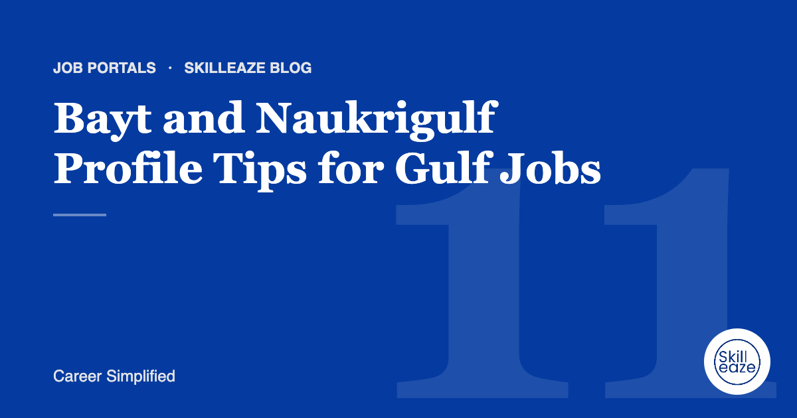

Job portals · 4 min read
Bayt and Naukrigulf Profile Tips for Gulf Jobs
How to set up your profiles for recruiters hiring across the UAE, Saudi Arabia, Qatar and the wider GCC.

Fill nationality and visa details
Gulf recruiters often filter by nationality, visa status and current location. Leaving these blank can hide you from searches.
Use standard job titles
Match common titles used in GCC vacancies so your profile appears in keyword searches.
Want this done for you?
Our team writes your Job portal optimization from your real experience. INR 690 · AED 30 · USD 10 (50% off).
Our team writes your Job portal optimization from your real experience. INR 690 · AED 30 · USD 10 (50% off).
Highlight GCC experience
If you have worked in the region, make it obvious in your headline and summary.
Add a professional photo where expected
Photos are common on Gulf profiles. Use a clear, professional headshot.
Keep CV and profile aligned
Upload the same CV you use for direct applications and keep dates consistent.
General guidance only. Employer requirements vary; always follow the job advert.
 Chat on WhatsApp
Chat on WhatsApp